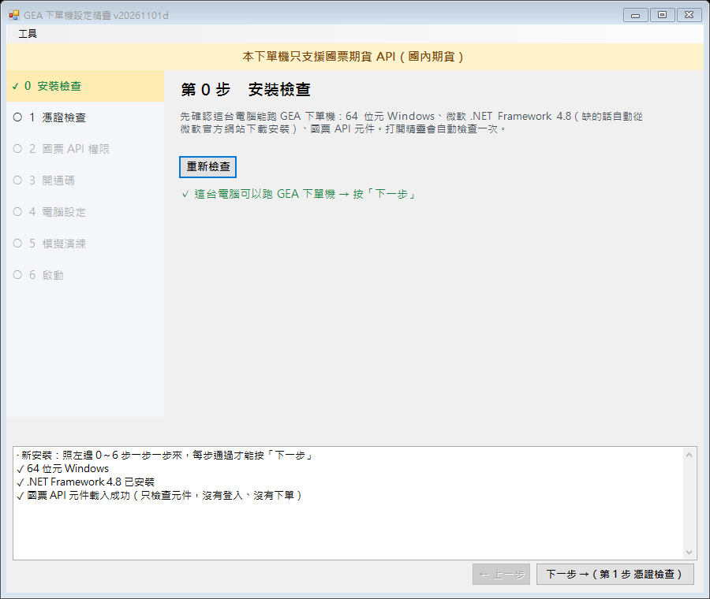
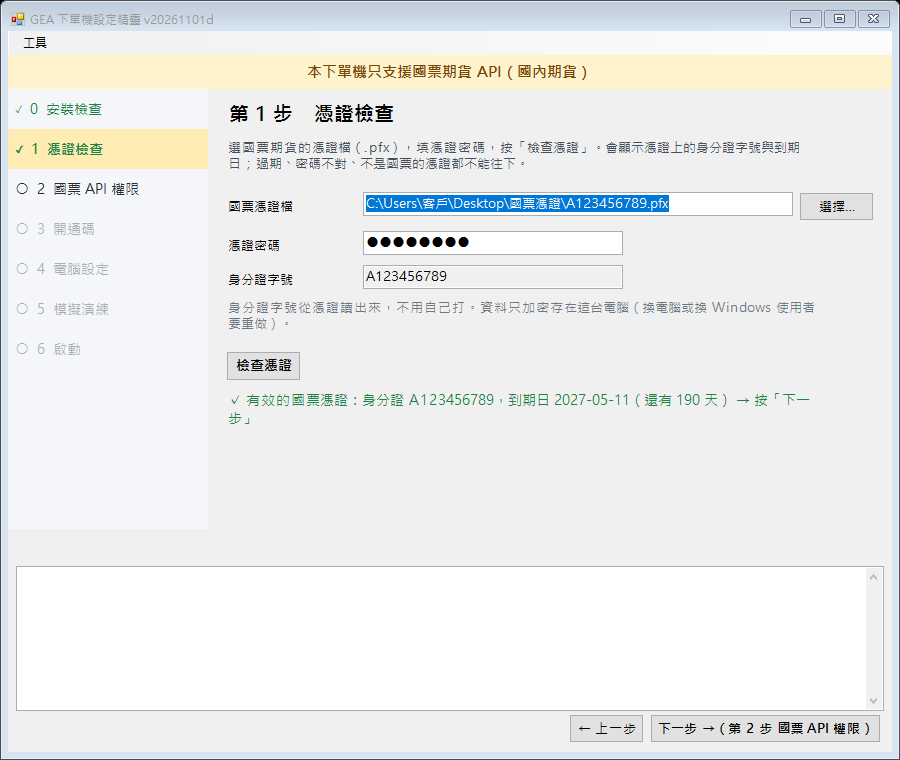
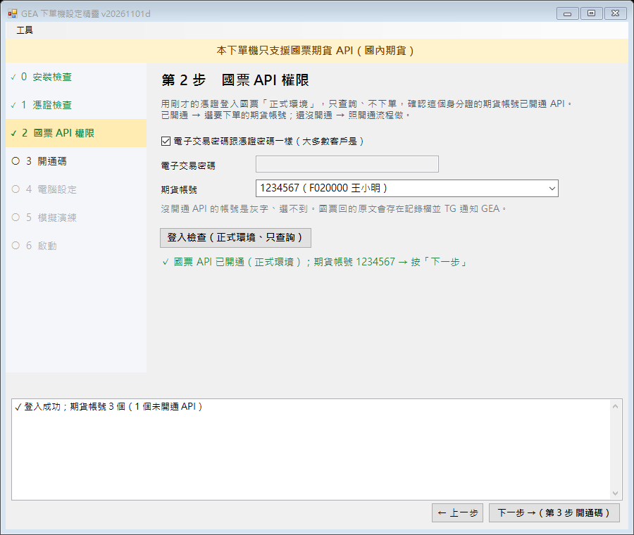
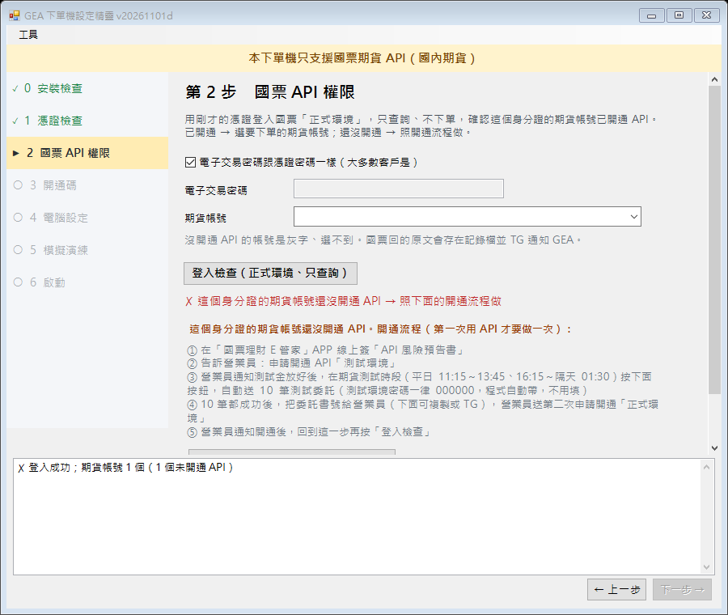
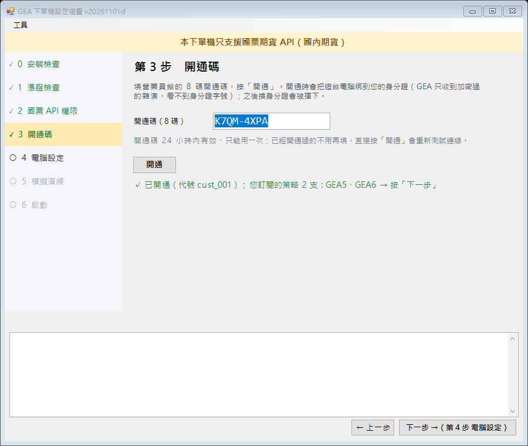
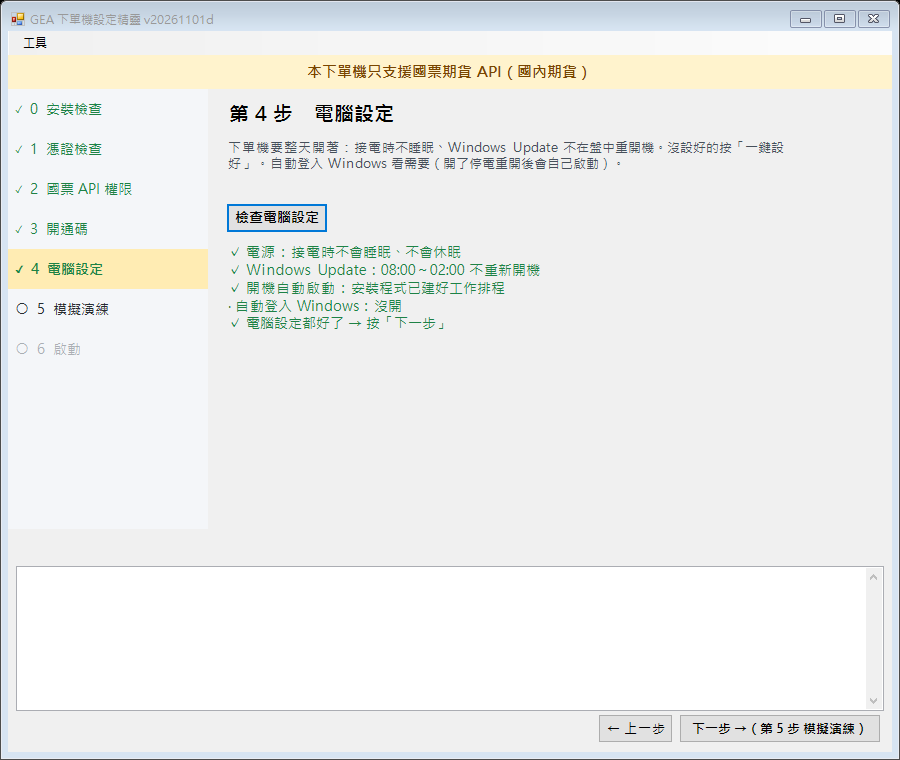
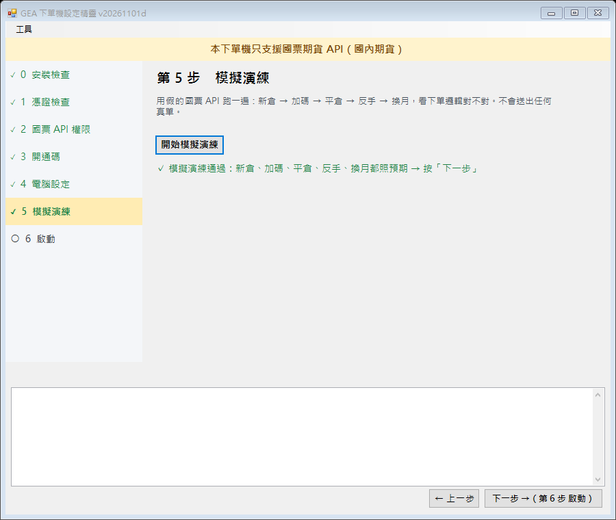
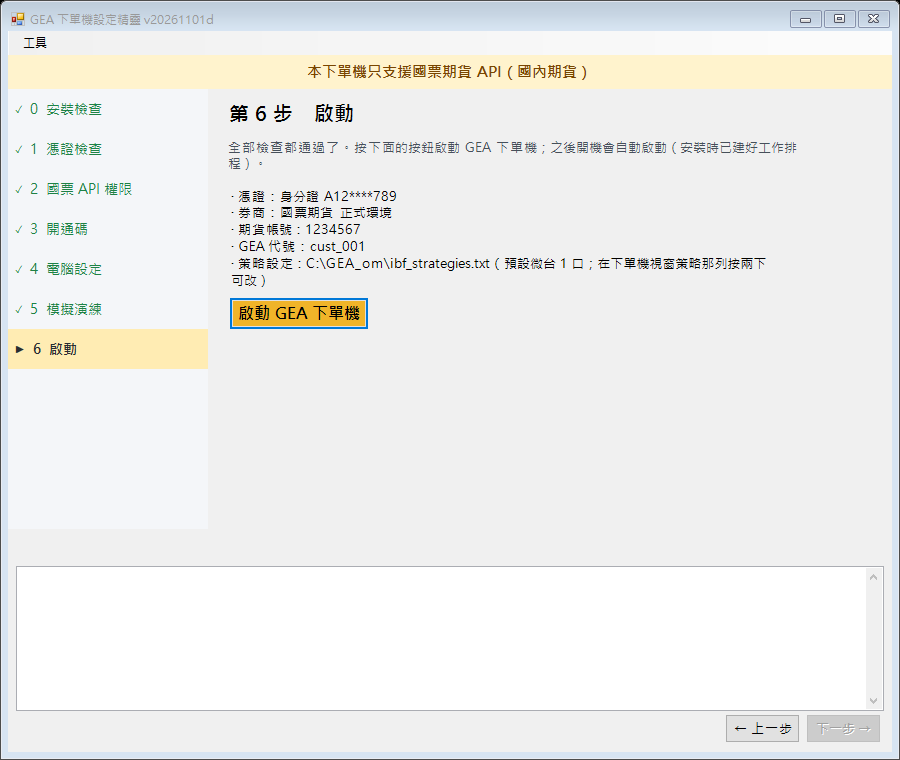

GEA 下單機設定精靈 20261101d（0～6 步）預覽
【舊】總指揮 11-01 21:00 D 段。畫面是範例假資料（不是真客戶）。最上方固定一行「本下單機只支援國票期貨 API（國內期貨）」；每步通過才亮「下一步」；左邊步驟清單、上方「工具」選單可單獨重跑 1～5（另有模擬模式、開 API 開通精靈、開記錄資料夾）。通過紀錄存 C:\GEA_om\setup_steps.txt，重開精靈接著做。
第 0 步 安裝檢查
64 位元、.NET 4.8（缺就自動從微軟下載安裝、SHA256 驗過才執行）、國票元件；打開精靈自動檢查

第 1 步 憑證檢查
選 .pfx＋憑證密碼 → 讀出身分證、到期日；密碼錯／過期／不是國票（主旨沒有 RA-IBFS）／不是 TWCA 發的 → 「無效憑證」＋原因、停在這步；30 天內到期另外提醒

第 2 步 國票 API 權限（已開通）
正式環境只查詢 → 期貨帳號下拉（沒開 API 的灰字、選不到）；電子交易密碼預設＝憑證密碼

第 2 步 國票 API 權限（未開通）
顯示開通流程（E 管家簽風險預告書 → 測試環境 → GeaApiCheck 10 筆、測試密碼 000000 → 書號可複製／TG → 正式環境），停在這步；原因不明 → 國票原文＋TG

第 3 步 開通碼
兌換＋綁身分證（只送雜湊）＋連中繼收部位快照、補合約表與策略設定

第 4 步 電腦設定
電源、Windows Update、工作排程；一鍵設好、自動登入

第 5 步 模擬演練
假國票跑新倉→加碼→平倉→反手→換月

第 6 步 啟動
摘要＋啟動 GEA 下單機
